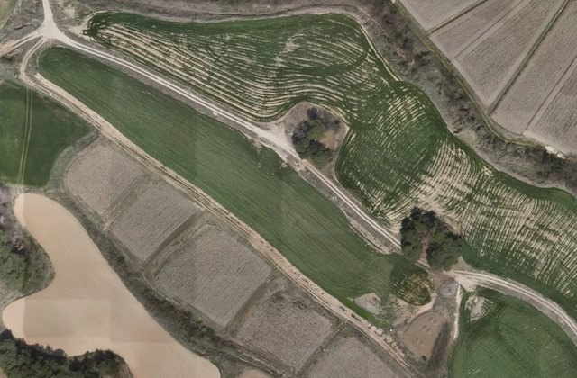
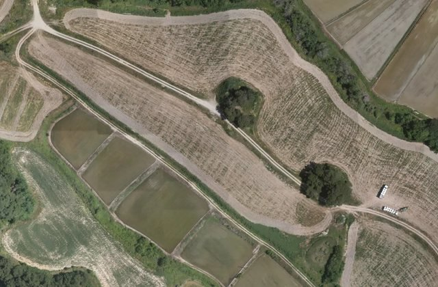
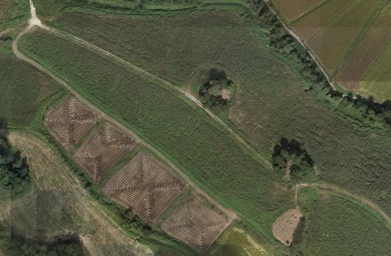

내 서비스›영농관리 행정서비스
영농관리 행정서비스
농지이용 경작·비경작 · 비닐하우스 · 사료작물 · 2025년 사업 · 농정과 최근 결과 2026.06.08
현황
결과 지도
필지 목록1,038
이력26
통계·보고서

현장 확인 필요 · 남원시
1,035필지~
결과 지도필지 목록
2025년 드론영상 · 휴경·전용 의심 필지 윤곽
읍면별 현장 확인 필요우선순위 A · 많은 곳부터
읍면을 누르면 그 읍면의 결과 지도로 갑니다. 전체 표는 통계·보고서 탭에.
영상과 결과 — 2025년 네 시점같은 자리 · 4·6·8·10월

2025.04
2025.06 2025.08
2025.08
2025.10경작 흔적이 네 시점 모두 보이지 않으면 휴경·전용 의심으로 분류합니다. 판정은 담당자가 현장에서 확정합니다.
이 결과는2판 · 2026.09.26 공개
- 무엇이
- 판정한 필지 2,098경작지 1,291 · 비경작지 807 · 우리 시 관할 안만
- 언제
- 2025년 드론영상 · 2026.06.08 분석
- 믿을 만한 정도
- 보통현장 확인 전 참고용
현장 확인 예정2건
- 산동면 대기리 61510.04 확인 · 대장 대조 불일치예정
- 덕과면 사율리 501-310.04 확인 · 대장 대조 불일치예정
LX와 주고받은 검토 요청0건
아직 없습니다. 결과 지도의 필지 카드에서 'LX에 검토 요청'으로 보냅니다.
LX
김도윤 · LX 헬프데스크 담당예시LX 관리자가 이 서비스에 지정 · 막힌 일은 요청하기로

영농관리생활환경도로 안전관리
보고 있는 결과
영농관리 행정서비스 2판
2025년 드론영상 · 2026.06.08 분석 · 2,098필지
2023년 항공영상(1판) — 눌러서 바꾸기
이 결과 설명네 시점 비교행정정보와 비교
휴경·전용 의심 1,035경작지
이 영상으로 분석 요청영상을 보다가 바로 — 요청하기 메뉴에서도 같은 곳으로
필지 목록확인 전 1,038 · 확인 끝 17 · 오탐 4
지금 '필지 대조 결과' 표 그대로 — 읍면 · 상태 · 확인 결과로 거르고, 한 줄을 누르면 결과 지도의 그 필지로.
이력이 서비스에서 일어난 일 · 시간순
전체 26결과 공개 2확인 기록 21검토 요청 1분석 요청 1촬영 요청 0내려받기 0엑셀로 내려받기
- 10.01
- 검토 요청세전리 1395-12 — "비닐하우스 아님"예시LX 김도윤 답 · "다음 판에 반영합니다"박서연 · 농정과
- 09.29
- 확인 기록운봉읍 준향리 824-9 — 맞음메모 '위반'김현장
- 확인 기록운봉읍 권포리 1213-4 — 아님메모 '대장과 같음'김현장
- 확인 기록주생면 지당리 845-2 — 맞음메모 '위반'현장조사 1팀
- 확인 기록산동면 대기리 615 — 현장 확인 예정 10.04메모 '현장 확인 요청 · 대장 대조 불일치'농정과 현장조사 1팀
- 확인 기록덕과면 사율리 501-3 — 현장 확인 예정 10.04메모 '현장 확인 요청 · 대장 대조 불일치'농정과 현장조사 1팀
- 이날 1건 더
- 09.27
- 확인 기록보절면 금다리 999-2 — 맞음다음 확인 10.06 · 메모 '위반'토지정보과
- 확인 기록아영면 아곡리 1053-12 — 아님다음 확인 10.06 · 메모 '대장과 같음'토지정보과
- 확인 기록운봉읍 동천리 621 — 오탐메모 '대장과 같음'담당자
- 이날 12건 더
- 09.26
- 결과 공개2판2025년 드론영상 · 2026.06.08 분석 · 판정한 필지 2,098 · 결과 단위가 필지로LX
- 06.08
- AI 분석2025년 드론영상 분석 끝2,098필지LX
- 04.21
- 분석 요청덕과면 일대 영상 → 영농관리예시LX 승인 · 분석 끝박서연 · 농정과
이력에 남는 것
- 결과 공개LX가 새 판 · 회차를 열 때
- 확인 기록담당자가 필지 카드에 적은 결과 · 메모 · 다음 확인 날짜
- 검토 요청보낸 메모와 LX 답
- 분석 요청보냄 → LX 확인 → 분석 끝
- 촬영 요청보냄 → LX 답(시기 · 금액) → 영상 도착
- 내려받기누가 무엇을 받았나
모두 서버에 이미 쌓이는 기록(필지 상태 기록 · 요청 · 검토 · 내려받기)을 한 줄기로 보이는 것입니다. 새로 적는 칸은 없습니다.
기간전체올해이번 달기준 2026.10.01
20,872필지의심 필지(확인 전)
1,035필지현장 확인 필요(우선순위 A · 판정 전)
17필지확인 끝
4필지오탐(AI가 잘못 봄)
2필지현장 확인 예정
읍면별우선순위 A 1,053 중 판정 전 1,035
| 읍면동 | 의심 필지 | 우선순위 A | 확인 끝 | 오탐 |
|---|---|---|---|---|
| 운봉읍 | 1,881 | 7 | 4 | |
| 송동면 | 1,328 | 0 | 0 | |
| 아영면 | 2,085 | 2 | 0 | |
| 보절면 | 835 | 2 | 0 | |
| 대강면 | 1,676 | 0 | 0 | |
| 인월면 | 1,390 | 0 | 0 | |
| 수지면 | 824 | 0 | 0 | |
| 대산면 | 719 | 1 | 0 | |
| 사매면 | 912 | 0 | 0 | |
| 주생면 | 1,053 | 1 | 0 | |
| 덕과면 | 774 | 1 | 0 | |
| 금지면 | 1,563 | 2 | 0 | |
| 그 밖 27곳 | 6,632 | 1 | 0 | |
| 남원시 전체 | 20,872 | 17 | 4 |
39곳 모두 펼치기
월별 확인 기록담당자가 적은 것
5월
6월
7월
8월
219월
010월
맞음 7 · 아님 10 · 오탐 4 (9월)
보고서 · 자료 내려받기
실태조사 보고서읍면별 표 · 확인 결과 · 지도 그림 — 한글 · PDF만들기
필지 엑셀필지 목록 · 확인 결과 · 메모받기
지도 파일지도 프로그램용받기
요약숫자만 한 장받기
우리 시 관할 안 결과만. 처음 받을 때 이용 약속에 한 번 동의하고, 누가 무엇을 받았는지 이력에 남습니다.
전북특별자치도 남원시대표전화 063-620-6114AI 분석 · 모델 개발과 갱신 — LX 한국국토정보공사